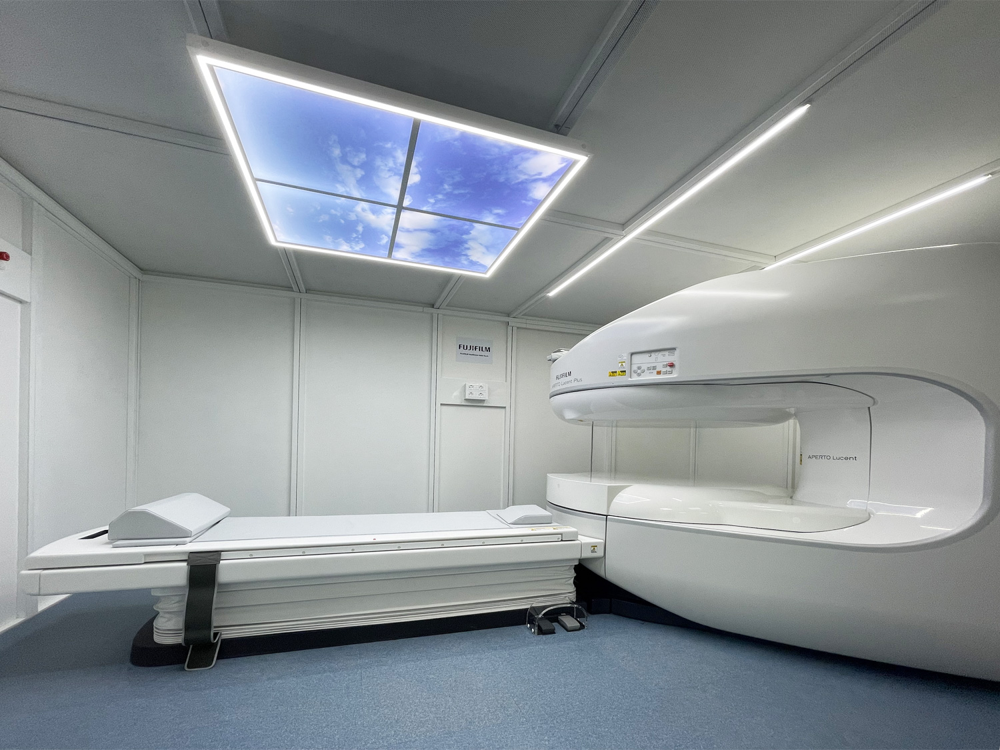

Magnete Permanente 0,4 T
APERTO™ Lucent Plus utilizza un magnete permanente con intensità di campo statico pari a 0,4 Tesla.
Tecnologia FUJIAPERTO™ Lucent Plus è una Risonanza Magnetica ad alta tecnologia dotata di magnete permanente con intensità di campo statico da 0,4 T e gantry compatto. La configurazione aperta e panoramica è progettata per ridurre l'ansia del paziente, in particolare nei casi di claustrofobia e sovrappeso.

Il sistema APERTO™ Lucent Plus unisce una configurazione aperta e panoramica a soluzioni tecnologiche orientate all'efficienza diagnostica e al comfort del paziente.
APERTO™ Lucent Plus utilizza un magnete permanente con intensità di campo statico pari a 0,4 Tesla.
Tecnologia FUJIIl sistema presenta un aspetto aperto e panoramico, con un gantry compatto progettato per rendere l'esame più confortevole.
Gantry compattoLa configurazione è progettata per ridurre l'ansia, in particolare nei pazienti che soffrono di claustrofobia o sono in sovrappeso.
Ambiente confortevoleIl sistema offre imaging RM sofisticato e capacità di condivisione delle immagini a supporto dell'attività diagnostica.
Condivisione immaginiLe principali caratteristiche pubblicate da Ecomedica per la nuova Risonanza Magnetica Aperta.
Ecomedica presenta il sistema come una soluzione ad alta tecnologia orientata alla qualità diagnostica, all'efficienza operativa e al comfort del paziente.
APERTO™ Lucent Plus presenta una configurazione aperta e panoramica, progettata per ridurre l'ansia del paziente. Questa caratteristica la rende particolarmente adatta a chi soffre di claustrofobia e/o è in sovrappeso.
Il sistema utilizza un magnete permanente con intensità di campo statico da 0,4 Tesla e un gantry compatto. Offre imaging RM sofisticato e soluzioni orientate alla velocità, all'automazione e alla condivisione delle immagini.
La Risonanza Magnetica Aperta viene eseguita presso la sede Ecomedica Valmontone di Via Giacomo Matteotti, 72. Per informazioni è possibile contattare il centralino allo 06.9596478 / 06.81152114 oppure la sede Matteotti al 380.7807852.